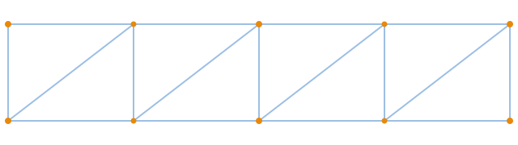
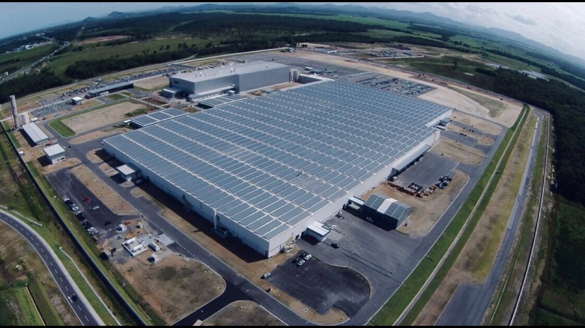
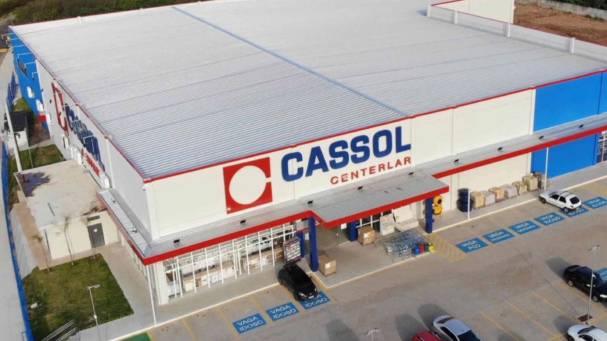
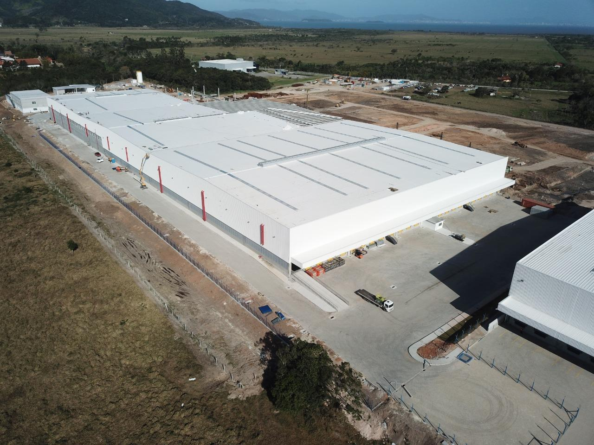
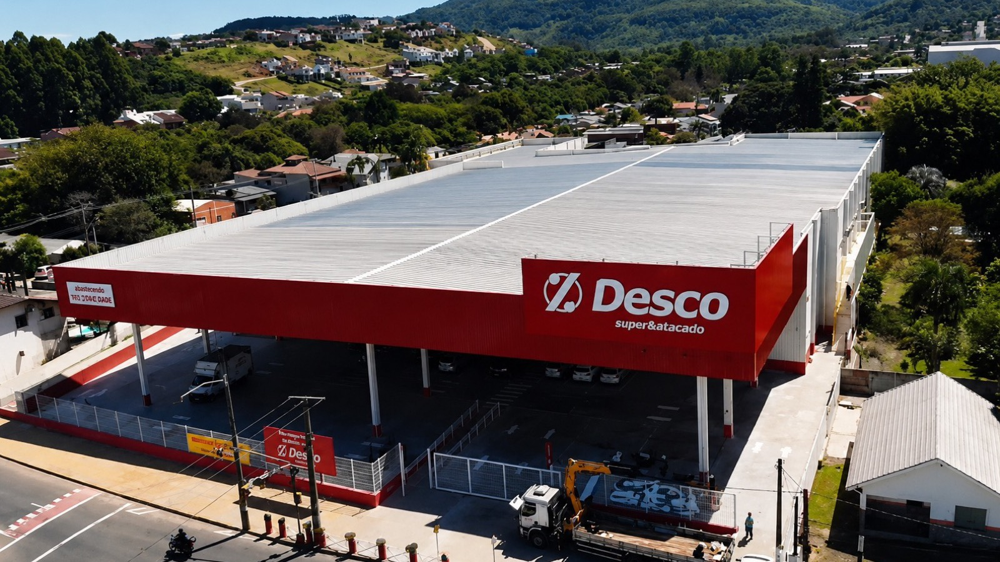
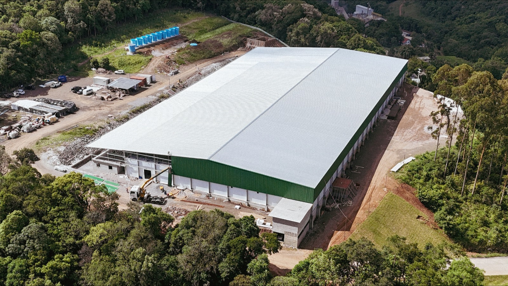

Estruturas Metálicas do cálculo à montagem
Projetos personalizados para galpões industriais, PCHs, torres de processos e edifícios múltiplos — com engenharia própria, fabricação em oficina e montagem no canteiro em uma única solução.
- até 40 mVãos livres sem pilares intermediários
- Aço A572Aços estruturais ASTM A36 / A572 para alta resistência
- NBR 8800Projeto conforme normas ABNT de estruturas de aço
- 100%Controle de qualidade na fabricação e montagem

Engenharia que entrega confiança
Um ciclo completo e integrado — sem retrabalho, sem surpresas em obra.
Engenharia integrada
Cálculo estrutural e projeto trabalhando em sincronia, garantindo coerência entre concepção e execução — menos retrabalho e atrasos.
Grandes vãos livres
Vãos de até 40 m sem colunas intermediárias, liberando o layout para produção, armazenagem e circulação.
Obra mais rápida
Componentes fabricados em oficina com controle de qualidade, reduzindo prazos e dependência de clima no canteiro.
Durabilidade superior
Aços estruturais com proteção anticorrosiva e vida útil superior a 30 anos, mesmo em ambientes industriais agressivos.
Versatilidade
Galpões, PCHs, torres de processos, prédios múltiplos e casas conceito — adaptável a cada finalidade e carga.
Solução completa
Da concepção à montagem final: cálculo, fabricação, arremates e instalação em uma única responsabilidade.
Do papel ao aço erguido
Uma metodologia clara, do primeiro cálculo à entrega da estrutura.
Levantamento
Visita e análise do terreno, finalidade da obra e condições de carga e uso.
Cálculo e projeto
Dimensionamento estrutural em conformidade com as normas ABNT aplicáveis.
Fabricação
Produção em oficina com corte, solda e tratamento anticorrosivo sob controle de qualidade.
Montagem
Erguimento e fixação no canteiro por equipe especializada, com segurança e precisão.
Para quais tipos de obra?
Soluções dimensionadas para os segmentos mais exigentes.

Galpões Industriais
Vãos livres, suporte para equipamentos de produção e clima adequado a processos industriais.
Grande porte
PCHs e Energia
Estruturas preparadas para receber geradores, turbinas e equipamentos de pequenas centrais hidrelétricas.
Setor elétrico
Torres de Processos
Suportes especializados para equipamentos de processo, com proteção anticorrosão e acessos seguros.
Processos
Edifícios Múltiplos
Estruturas para prédios residenciais e comerciais, integradas a sistemas de cobertura e fachadas.
VerticalizaçãoTécnica à prova de projeto
Cada estrutura é dimensionada para as condições reais da sua obra. Trabalhamos com aços estruturais consagrados e normas ABNT vigentes, garantindo segurança, conformidade e durabilidade.
Da seleção do material ao tratamento superficial, tudo é especificado e acompanhado pela nossa engenharia.
Receber especificação técnicaSegurança em cada detalhe
Critérios que guiam todo o ciclo de engenharia, fabricação e montagem.
Dimensionamento com responsabilidade técnica e rastreabilidade de projeto.
Inspeção de soldas e medidas em oficina antes de chegar ao canteiro.
Procedimentos e equipamentos adequados para erguimento e fixação.
Conformidade com as normas técnicas brasileiras de estruturas de aço.
Obras realizadas
Projetos executados pela Poolmak com soluções em estruturas metálicas.


Solicite uma proposta
Preencha o formulário abaixo. Nossa equipe técnica retorna em até 24h com um orçamento personalizado para seu projeto de estrutura metálica.